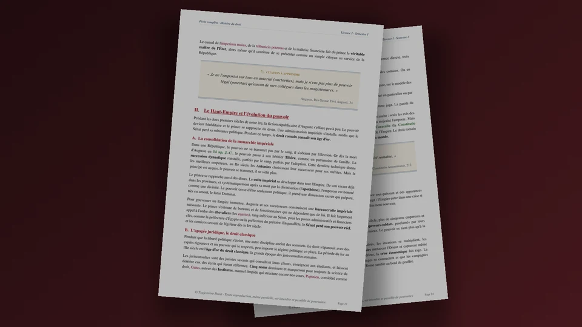

Le Code civil de 1804 : histoire, rédacteurs et plan
Le Code civil de 1804 est le recueil de droit privé formé par la loi du 21 mars 1804, qui réunit 36 lois. Une commission de quatre juristes, Tronchet, Portalis, Bigot de Préameneu et Maleville, en a rédigé le projet à partir de l'ancien droit (le droit d'avant 1789) et des lois de la Révolution. Il compte 2 281 articles, répartis en trois livres sur les personnes, les biens et les manières d'acquérir la propriété.
Le Code civil traite du droit privé, c'est-à-dire des règles qui organisent les relations entre particuliers, comme la famille ou la propriété. Il peut tomber à l'examen sous trois formes. Une question de cours te demande d'abord qui l'a rédigé et comment il a été adopté. Une dissertation pose ensuite une question comme « Le Code civil de 1804 est-il un code révolutionnaire ? ». Enfin, un commentaire de texte porte sur un extrait du Discours préliminaire, par lequel Portalis, l'un des rédacteurs, a présenté le projet en 1801.

Histoire du droit et des institutions en L1
Histoire du droit L1 S1, la fiche complète de 136 pages
Le Code civil de 1804 reprend des catégories et un plan venus de Rome, que les juristes Domat et Pothier avaient remis en ordre. C'est pourquoi la fiche de 136 pages relie Rome au Code civil au chapitre 5 (page 32) et présente Domat et Pothier au chapitre 18 (page 120). Elle suit en vingt chapitres l'histoire du droit et de l'État, de la royauté romaine à la fin de l'Ancien Régime. La fiche d'histoire des institutions (semestre 2, 96 pages) replace ensuite le Code dans l'État de Napoléon.
- Une carte de plan en tête de chaque chapitre
- Les textes et les auteurs à citer pour chaque époque
- Un PDF reçu juste après le paiement
Paiement Stripe · accès à vie · mises à jour incluses · garantie satisfait ou remboursé sous 7 jours
Pourquoi la France avait-elle besoin d'un Code civil en 1800 ?
Avant la Révolution, les règles civiles changeaient du nord au sud du royaume.
Au nord, des coutumes (des règles locales nées de l'usage) organisaient la famille et la transmission des biens. Au sud, on appliquait surtout le droit romain, qu'on appelait le droit écrit, car il figurait dans les recueils de l'empereur Justinien. Quelques ordonnances royales (des lois du roi), comme celles de 1731 sur les donations et de 1735 sur les testaments, valaient pour tout le royaume.
La Révolution française veut un droit civil commun à tous les Français. En effet, l'Assemblée constituante décide dès 1790 de faire un code de lois civiles communes à tout le royaume. Cambacérès présente ensuite un premier projet le 9 août 1793 et un deuxième le 9 septembre 1794. Un troisième suit en 1796. Aucun n'aboutit. La Convention adopte seulement les dix premiers articles du deuxième, et le troisième est abandonné. Bonaparte, qui veut unifier le droit, relance donc la codification après le coup d'État du 18 brumaire (novembre 1799).
Qui a rédigé le Code civil de 1804 ?
En août 1800, par un arrêté du 24 thermidor an VIII (une décision du gouvernement), Bonaparte, Premier consul (le chef du gouvernement) depuis 1799 et futur empereur Napoléon Ier, nomme une commission de quatre juristes.
| Le rédacteur | Son droit d'origine | Son rôle |
|---|---|---|
| Tronchet | Les pays de coutumes | Président de la commission |
| Portalis | Les pays de droit écrit | Auteur du Discours préliminaire |
| Bigot de Préameneu | Les pays de coutumes | Membre de la commission |
| Maleville | Les pays de droit écrit | Secrétaire de la commission |
Deux des quatre juristes connaissent les coutumes et deux le droit écrit, si bien que chaque tradition est représentée dans la commission. Cambacérès, l'auteur de trois projets de la Révolution, suit de près les travaux. Les juristes travaillent quatre mois selon Maleville, puis la commission présente son projet en janvier 1801, avec le Discours préliminaire que Portalis écrit au nom des quatre.
Bonaparte intervient surtout au Conseil d'État (l'organe qui prépare les textes du gouvernement), qui discute le projet en une centaine de séances à partir de juillet 1801. Il préside environ la moitié des séances consacrées au Code, et Cambacérès le remplace quand il est absent.
À la question « Qui est l'auteur du Code civil ? », tu réponds par la commission de quatre juristes, puis tu précises le rôle de Bonaparte au Conseil d'État.
Comment le Code civil a-t-il été adopté, étape par étape ?
Le Code est voté titre par titre (un titre est une subdivision du Code), puis réuni en un seul texte le 21 mars 1804.
| L'étape | La date | Ce qui se passe |
|---|---|---|
| La rédaction | Août 1800 à janvier 1801 | La commission écrit le projet en quatre mois selon Maleville, l'un des rédacteurs, et le présente en janvier 1801. |
| Les observations et la discussion | 1801, puis à partir de juillet 1801 | Le Tribunal de cassation (le nom que portait alors la Cour de cassation) et les tribunaux d'appel donnent leurs observations. Le Conseil d'État supprime ensuite presque entièrement le livre préliminaire de Portalis, jugé plus philosophique que juridique. |
| La résistance des assemblées | Décembre 1801 | Les tribuns du Tribunat (qui discute les projets de loi) reprochent aux juristes de s'être trop inspirés de l'ancien droit. Le Corps législatif (qui les vote) rejette de justesse le projet de titre préliminaire sur la publication et l'application des lois. |
| La reprise en main | 1802 | Un sénatus-consulte de mars 1802 (une décision du Sénat) organise le renouvellement du Corps législatif et du Tribunat, et les membres sortants sont choisis parmi les opposants au lieu d'être tirés au sort, ce qui permet à Bonaparte de soumettre les assemblées. |
| Le vote des 36 lois | Mars 1803 à mars 1804 | Chaque titre devient une loi, soit 36 lois. La première, votée le 5 mars 1803 et promulguée (rendue exécutoire par le Premier consul) le 15 mars 1803, fixe le titre préliminaire de six articles. |
| La réunion en un code | 21 mars 1804 (30 ventôse an XII) | Une loi réunit les 36 lois en un seul recueil, le Code civil des Français, qui compte 2 281 articles. Il est promulgué le 31 mars 1804. |
Les articles 2 à 6 du Code actuel viennent encore de la loi de 1803. Le Code prend ensuite le nom de Code Napoléon en 1807.
Quel est le plan du Code civil de 1804 ?
Le Code s'ouvre sur un titre préliminaire de six articles, puis se divise en trois livres.
| La partie | Son intitulé de 1804 | Ce qu'on y trouve | Titres |
|---|---|---|---|
| Titre préliminaire | De la publication, des effets et de l'application des lois en général | La publication des lois, leur non-rétroactivité (article 2), le devoir de juger (article 4), l'interdiction de juger par règle générale (article 5) et l'ordre public (article 6). | 1 |
| Livre I | Des personnes | Les droits civils (les droits des relations privées, comme se marier ou hériter, par opposition aux droits politiques), l'état civil (les registres des naissances, mariages et décès), le mariage, le divorce, la filiation (le lien juridique entre un enfant et ses parents), l'adoption, la puissance paternelle (l'autorité parentale d'aujourd'hui), la tutelle et la majorité. | 11 |
| Livre II | Des biens et des différentes modifications de la propriété | La distinction des biens, la propriété, l'usufruit (le droit de jouir d'un bien dont un autre est propriétaire, à condition de le conserver) et les servitudes. | 4 |
| Livre III | Des différentes manières dont on acquiert la propriété | Les successions, les donations et testaments, les contrats, les engagements sans convention (dont la responsabilité), le contrat de mariage, la vente, le louage (la location d'une chose ou d'un travail), la société, le cautionnement, les hypothèques et la prescription. | 20 |
On retrouve dans ce plan celui des Institutes de Gaius et de Justinien (des manuels de droit romain), qui traitaient des personnes et des choses, puis des actions en justice. Le Code laisse de côté les actions, que le Code de procédure civile de 1806 régit à part. Il range les contrats dans le troisième livre, parmi les manières d'acquérir la propriété, et il traite donc le contrat comme un moyen d'acquérir un bien. Tu peux approfondir ce lien avec la dissertation corrigée sur l'héritage du droit romain, qui développe la filiation entre le droit romain et le Code.
Le Code actuel compte cinq livres. Un livre IV sur les sûretés (les garanties de paiement, comme la caution ou l'hypothèque), détaché du livre III en 2006, et un livre V sur Mayotte s'ajoutent aux trois livres de 1804.
Quels principes le Code pose-t-il, et que reste-t-il de ses articles de 1804 ?
| Le domaine | Le texte de 1804 | Aujourd'hui |
|---|---|---|
| La propriété | Article 544 : « La propriété est le droit de jouir et disposer des choses de la manière la plus absolue, pourvu qu'on n'en fasse pas un usage prohibé par les lois ou par les règlements. » | L'article reste en vigueur dans son texte de 1804. |
| L'égalité civile | Article 8 : « Tout Français jouira des droits civils. » | L'article 8 énonce toujours cette règle. |
| Le contrat | Article 1134, alinéa 1 : « Les conventions légalement formées tiennent lieu de loi à ceux qui les ont faites. » | Article 1103 depuis l'ordonnance du 10 février 2016 : « Les contrats légalement formés tiennent lieu de loi à ceux qui les ont faits. » |
| La responsabilité | Article 1382 : « Tout fait quelconque de l'homme, qui cause à autrui un dommage, oblige celui par la faute duquel il est arrivé, à le réparer. » | Article 1240 depuis la même ordonnance, qui reprend la même règle. |
| La famille | Article 213 : « Le mari doit protection à sa femme, la femme obéissance à son mari. » | La loi du 18 février 1938 met fin à l'incapacité de la femme mariée (elle ne pouvait ni agir en justice ni passer seule la plupart des actes sur ses biens). L'article 213 actuel, issu de la loi du 4 juin 1970, prévoit que « Les époux assurent ensemble la direction morale et matérielle de la famille. » |
| Le travail | Article 1781 : le maître (l'employeur) est cru sur son affirmation pour le montant des gages (la rémunération), pour le paiement de l'année écoulée et pour les acomptes de l'année en cours. | Cet article a été abrogé, c'est-à-dire supprimé. |
Le Code pose l'égalité civile et la liberté de contracter, mais la famille reste organisée autour du mari et du père, ce qui limite l'égalité de l'article 8.
Environ 1 200 des 2 281 articles de 1804 existaient encore en 2004 sous leur forme d'origine, selon la bibliothèque du Sénat. D'après le texte consolidé (à jour) de juillet 2026, environ 500 des 2 899 articles en vigueur gardent leur rédaction de 1803 ou de 1804, soit moins d'un sur cinq.
Pourquoi dit-on que le Code civil de 1804 est un compromis ?
Les rédacteurs décrivent eux-mêmes leur méthode dans le Discours préliminaire.
Une transaction est un accord où chacun cède une part de ses prétentions. Pour le Code civil, les deux parties sont le droit écrit du sud et les coutumes du nord.
| L'héritage | Ce que le Code en reprend |
|---|---|
| Le droit romain | Le plan en personnes et en choses, et des catégories comme la propriété, le contrat, les obligations et les successions. |
| Les ordonnances et les traités de juristes | Des dispositions des ordonnances de 1731 (donations) et de 1735 (testaments), et les traités du juriste Pothier, dont les rédacteurs s'inspirent beaucoup. |
| Les coutumes | La communauté de biens entre époux (un régime où une grande partie des biens du couple appartient aux deux), qui s'applique quand les époux n'ont rien prévu par contrat. |
| La Révolution | L'égalité civile (article 8), l'état civil tenu par des agents publics et le divorce. |
Le régime de biens des époux (la manière dont ils organisent leurs biens) illustre ce compromis. En effet, Portalis rappelle que « Le régime des dots était celui des pays de droit écrit. La communauté était en usage dans les pays coutumiers. » La dot désignait les biens que la femme apportait au mariage et que le mari administrait. Le projet laisse donc les futurs époux choisir leur régime par contrat, mais il leur applique la communauté lorsqu'ils n'ont rien prévu.
Le Code rompt pourtant formellement avec l'ancien droit. L'article 7 de la loi du 30 ventôse an XII dispose que les lois romaines, les ordonnances, les coutumes et les autres textes anciens « cessent d'avoir force de loi générale ou particulière » dans les matières que le Code règle. Mais beaucoup de leurs règles se retrouvent dans les articles du Code.
Qu'est-ce qui a changé depuis 1804 ?
Le Code civil de 1804 est toujours en vigueur, mais ses articles ont été réformés les uns après les autres.
| Le sujet | En 1804 | Les réformes principales |
|---|---|---|
| Le divorce | Admis, pour faute ou par consentement mutuel, sous des conditions strictes. | Aboli par la loi du 8 mai 1816, rétabli pour faute seulement par la loi du 27 juillet 1884, puis réformé par la loi du 11 juillet 1975, qui rétablit le consentement mutuel. |
| La femme mariée | Elle doit obéissance à son mari (article 213) et ne peut ni agir en justice ni passer seule la plupart des actes sur ses biens. | Loi du 18 février 1938 (fin de l'incapacité), loi du 13 juillet 1965 (la femme gère ses biens propres et travaille sans l'accord de son mari), loi du 4 juin 1970 (direction commune de la famille). |
| La filiation | Les enfants nés hors mariage sont moins bien traités que les enfants légitimes (nés dans le mariage). | Loi du 3 janvier 1972, qui pose le principe d'une égalité entre enfants légitimes et enfants naturels, puis ordonnance du 4 juillet 2005, en vigueur le 1er juillet 2006. |
| La prescription (le délai au-delà duquel on ne peut plus agir en justice) | Trente ans en droit commun (article 2262). | Loi du 17 juin 2008, qui fixe à cinq ans le délai des actions personnelles ou mobilières (article 2224). |
| Les contrats | Les articles 1101 à 1369. | Ordonnance du 10 février 2016, qui refait le droit des contrats, le régime général des obligations et la preuve, et renumérote les articles. |
Le Code civil de 1804 a-t-il influencé d'autres pays ?
Le Code s'impose d'abord dans les pays conquis par la France, puis d'autres pays s'en inspirent.
Dès 1804, il s'applique à la rive gauche du Rhin, à la Belgique et au Luxembourg, alors annexés à la France. La Belgique le garde ensuite pendant plus de cent ans en le modifiant à peine. La Louisiane adopte un code civil largement inspiré du modèle français, et le Québec fait de même en 1866. En revanche, le Japon adopte en 1898 un code qui s'inspire surtout du projet de code civil allemand, et dans une moindre mesure du Code civil français.
Comment traiter le Code civil de 1804 à l'examen ?
Un plan de dissertation sur « Le Code civil de 1804 est-il un code révolutionnaire ? »
Au brouillon, tu pars d'abord des mots du sujet, comme dans la méthode de la dissertation juridique. Le Code civil de 1804 désigne le texte réuni par la loi du 21 mars 1804, tandis qu'un code révolutionnaire prolonge les principes de 1789, comme l'égalité. Ainsi, la problématique (la question à laquelle la copie répond) découle de ces définitions. Le Code civil prolonge-t-il la Révolution ou recompose-t-il l'ancien droit ?
- I. Un code qui fixe des acquis de la Révolution. A. L'égalité civile et la propriété individuelle (articles 8 et 544). B. L'état civil tenu par des agents publics et le divorce admis.
- II. Un code qui garde beaucoup de l'ancien droit. A. Le compromis entre droit écrit et coutumes. B. Une famille hiérarchisée autour du mari (article 213) et un employeur cru sur parole (article 1781).
La partie I s'appuie sur les articles 8 et 544 du tableau des principes et sur la ligne « La Révolution » du tableau des héritages. La partie II s'appuie sur la citation de Portalis, puis sur les articles 213 et 1781. Ton chargé de TD (l'enseignant qui anime tes séances de travaux dirigés) peut toutefois en attendre un autre plan.
Un extrait du Discours préliminaire à commenter
Le passage de Portalis sur le juge se retrouve en partie dans les articles 4 et 5 du Code. Portalis définit d'abord l'interprétation par voie d'autorité (résoudre les doutes par des règlements ou des dispositions générales), puis il affirme : « Ce mode d'interprétation est le seul qui soit interdit au juge. » Il ajoute ensuite : « Quand la loi est claire, il faut la suivre ; quand elle est obscure, il faut en approfondir les dispositions. Si l'on manque de loi, il faut consulter l'usage ou l'équité. »
Le mot « préliminaire » désigne trois textes différents, le Discours préliminaire (le discours de présentation du projet), le livre préliminaire de Portalis (presque entièrement supprimé) et le titre préliminaire du Code (six articles, conservé). Ce dernier contient les articles 4 et 5. L'article 4 oblige le juge à trancher même quand la loi se tait, reste obscure ou paraît insuffisante, sous peine de poursuites pour déni de justice (le refus de juger). Il ne mentionne pourtant ni l'usage ni l'équité. L'article 5 défend aux juges de prononcer par voie de disposition générale et réglementaire, et le juge ne peut donc ni refuser de juger ni poser une règle générale pour l'avenir.
Un extrait du Discours se commente en commençant par le dater (janvier 1801) et par nommer son auteur, puis en cherchant les articles du Code qui reprennent l'idée. La méthode du commentaire de texte juridique applique ces étapes à un autre passage du même discours, celui où Portalis recommande d'être sobre de nouveautés.
Quelles erreurs font perdre des points sur le Code civil de 1804 ?
Attribuer le Code à Napoléon seul
Une commission de quatre juristes écrit le projet, et Bonaparte intervient surtout au Conseil d'État.
Dater tout le Code au 21 mars 1804
Les 36 lois sont votées entre mars 1803 et mars 1804. Le 21 mars 1804 est la date de la loi qui les réunit en un seul Code, et la promulgation de ce Code date du 31 mars 1804.
Présenter le Code comme une table rase (un droit entièrement nouveau)
Les rédacteurs parlent eux-mêmes d'une transaction entre le droit écrit et les coutumes. Tu montres ce que le Code garde de l'ancien droit et ce qu'il prend à la Révolution.
Questions fréquentes sur le Code civil de 1804
Quand le Code civil de 1804 a-t-il été voté et promulgué ?
Qui a rédigé le Code civil de 1804 ?
Pourquoi appelle-t-on le Code civil « Code Napoléon » ?
Le Code civil de 1804 est-il toujours en vigueur ?
Pour continuer avec l'histoire du droit

Le Pack Ultra L1 S1 réunit les 36 ressources de ton premier semestre de L1 pour 259 €, la fiche d'histoire du droit L1 comprise. Voir le contenu du pack →